Log every new item in the Quote Tracker, then keep its row up to date until an order is placed.
Jump to: Add a new item · Update an item · Find an item · Make files · Add a scent · Fix a mistake · Change a dropdown list · Rules · Reference
Screenshots use made-up sample data. Click any picture to see it larger.
Click Open Quote Tracker above. On the Tools Hub its tile is called Quoting Tracker. The screen says M1S Quote Tracker.
If it asks, click Sign in with Microsoft. The list opens at the bottom, where the newest rows are.
It's the blue button in the top bar 1. A popup opens.
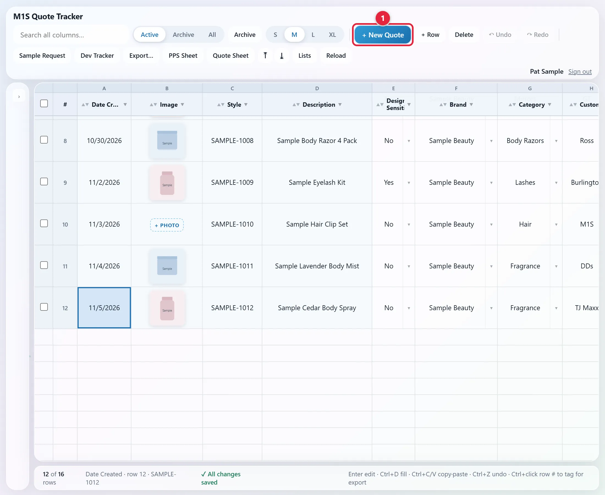
Drag a PNG or JPG onto the box at the left 1, or click the box to pick a file.
Tip: name the file like SAMPLE-1013_
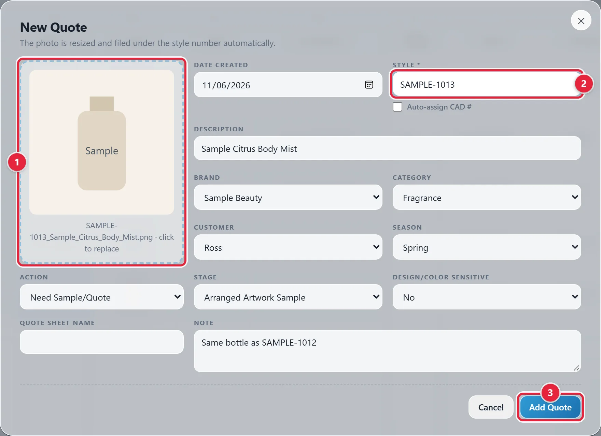
Type the style number in Style 2. It's the only box you must fill in.
Need a new CAD number? Tick Auto-assign CAD # under the box instead. The tool takes the next number when you add the item.
Enter Description, Brand, Category, Customer, Season and Design/Color Sensitive. Date Created is already set to today.
Leave Quote Sheet Name blank until the item is on a quote sheet. Use Note for anything else.
Action is what the item needs next, such as Need Sample/Quote. Pick one here. You can add more later.
Stage is where the item is in the quoting cycle, such as Arranged Artwork Sample.
It's at the bottom right of the popup, marked 3 in the picture in step 3. Your new row appears at the bottom of the list 1, and a black message confirms it.
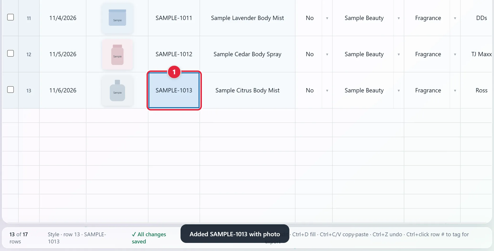
Use the search box or filters. See Find an item. Scroll right to reach Action and Stage. Date Created, Image, Style and Description stay in place as you scroll.
Click the small ▾ at the right edge of the Action box 1. Tick every value that's true now, and untick what's finished. Click Done 2.
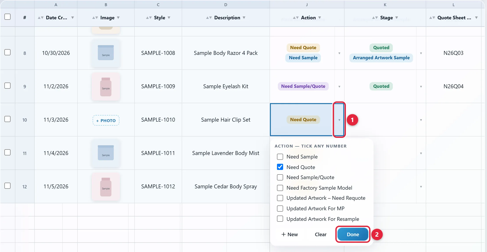
Do the same in the Stage column. Keep it current, through to Placed Order and Done.
Once the item is on a quote sheet, click its Quote Sheet Name box 1. The heading may be cut off as Quote Sheet …. Type the sheet's name, such as N26Q05. Press Enter.
Sheet names come from the Quote Directory. See Quoting Out to Factories.
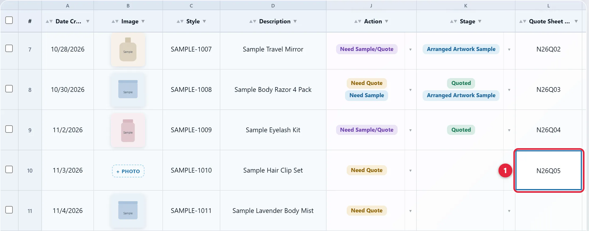
Open Stage. Tick Done in the list 1. Then click the blue Done button 2. The row moves to the Archive view.
Changed your mind? Press Ctrl+Z twice. Then click Active at the top to see the row again.
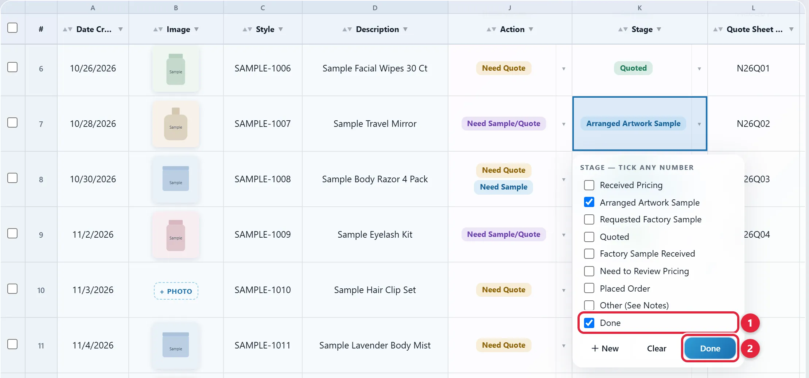
Use the one you need. These don't go in order.
Type in Search all columns… at the top left 1. The list shrinks as you type. The bottom left shows how many rows match 2. Capital letters don't matter.
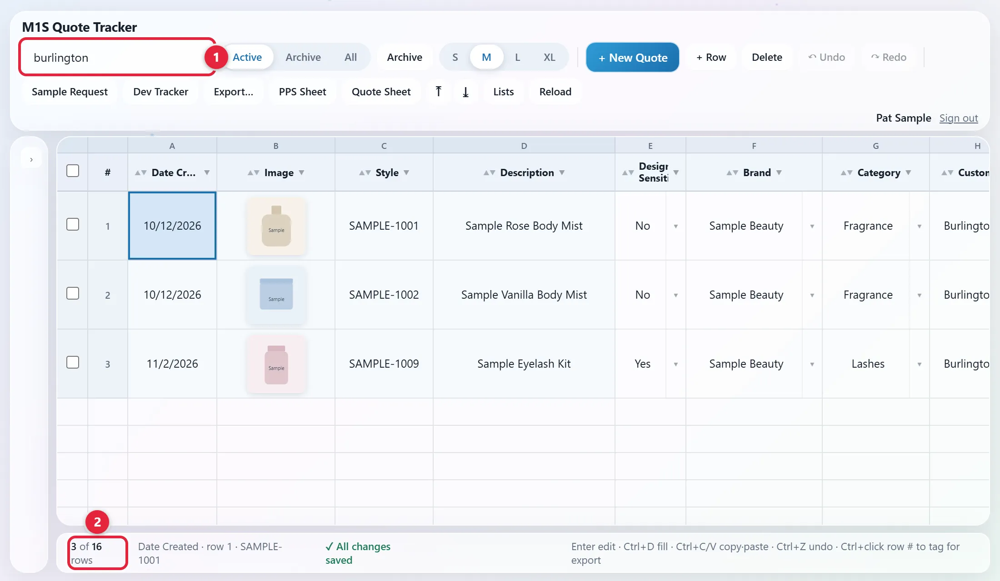
Click the small › at the far left of the list 1.
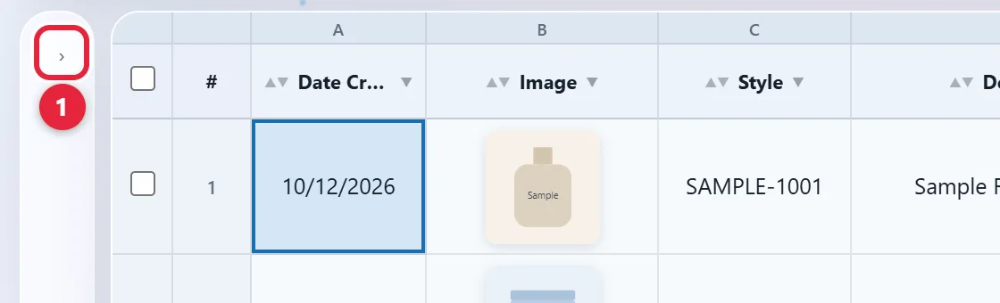
Click a group name, such as Action 1. Tick a value 2. The number beside each value is how many rows have it.
Clear all filters 3 takes every filter off and empties the search box.
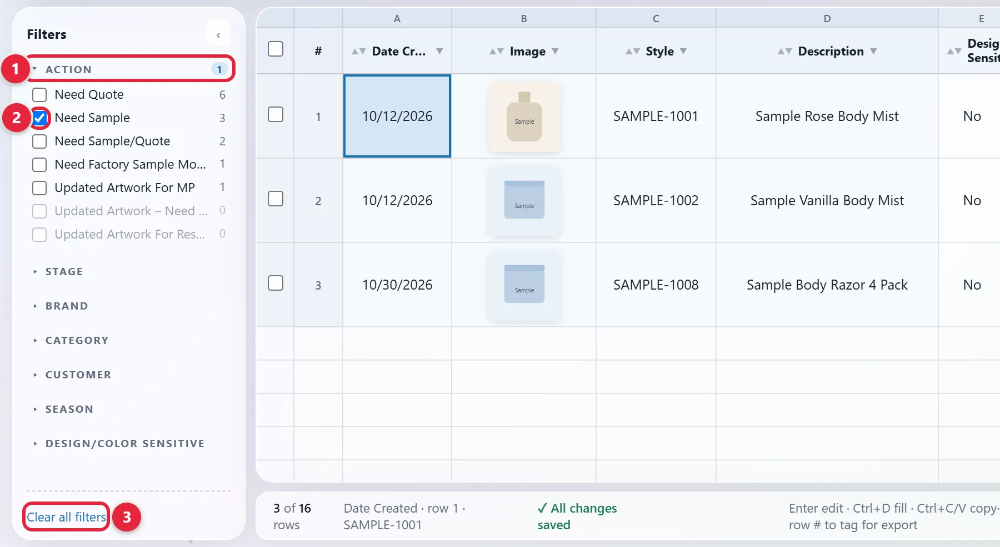
Click the ▼ in a column heading 1. Untick what you don't want. Click Apply 2. The ▼ turns red while that filter is on.
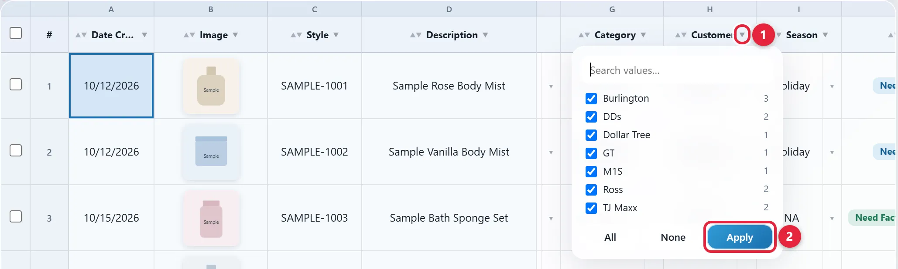
Click the ▲▼ at the left of the column heading. Click again to reverse the order. A third click turns the sort off.
Click Archive in the switch at the top 1. Archived rows show, oldest first. All shows every row. Active takes you back.
To bring a row back, click it, then click Restore 2. If its Stage still has Done, untick it too. Otherwise the next change to Stage archives the row again.
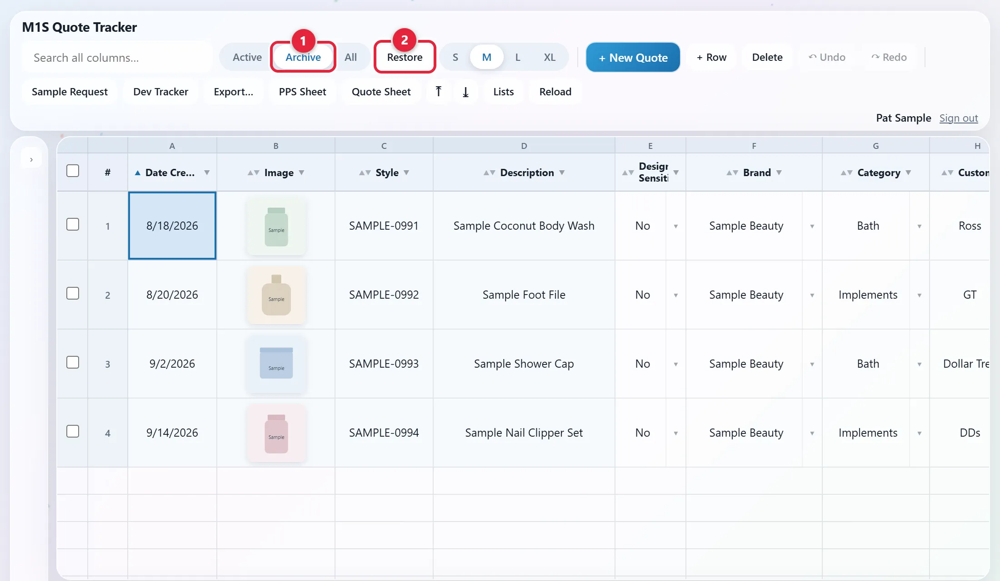
Click any photo. It opens large, with the item's details beside it. Use ‹ and › to move between photos. Press Esc to close.
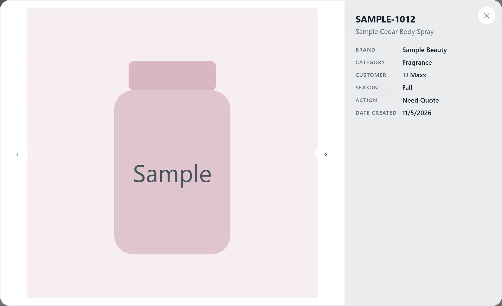
Tick the rows first. Then use the button you need.
Click the box at the left of each row 1. Sample Request 3 and Dev Tracker show how many rows are ticked.
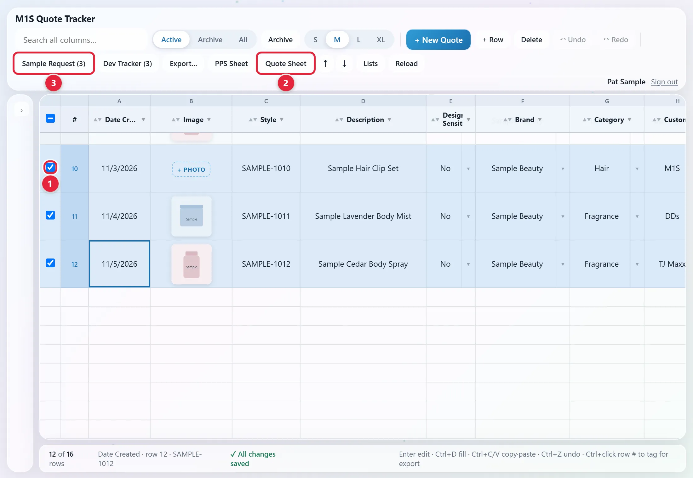
Click Quote Sheet 2. An Excel file downloads with Style #, Picture and Description filled in from each row. Package, Qty and Price are blank.
Fill in Package and Qty. Leave Price blank for the factory.
Rename the file to say what the quote is for. Its name holds only the date, and a second file with the same name lands on the first file's sheet. Then click ⬆ Import at the top right of the Quote Directory's Quote Sheets page. See Other ways to start.
Click Sample Request in the top bar, marked 3 in the picture in step 1. In the popup, pick the Supplier 1. Factory not on the list? See Add a factory or change its email. Type Sample Qty Needed 2. Click Create Files 3.
An Excel file with photos downloads, ready for the factory. The tool only downloads the file. It doesn't send it. The factory fills in Artwork Receive Date and SRD, and Sample Time works itself out.
To record the file in the Dev Tracker, see Add an SR, SC or BS file.
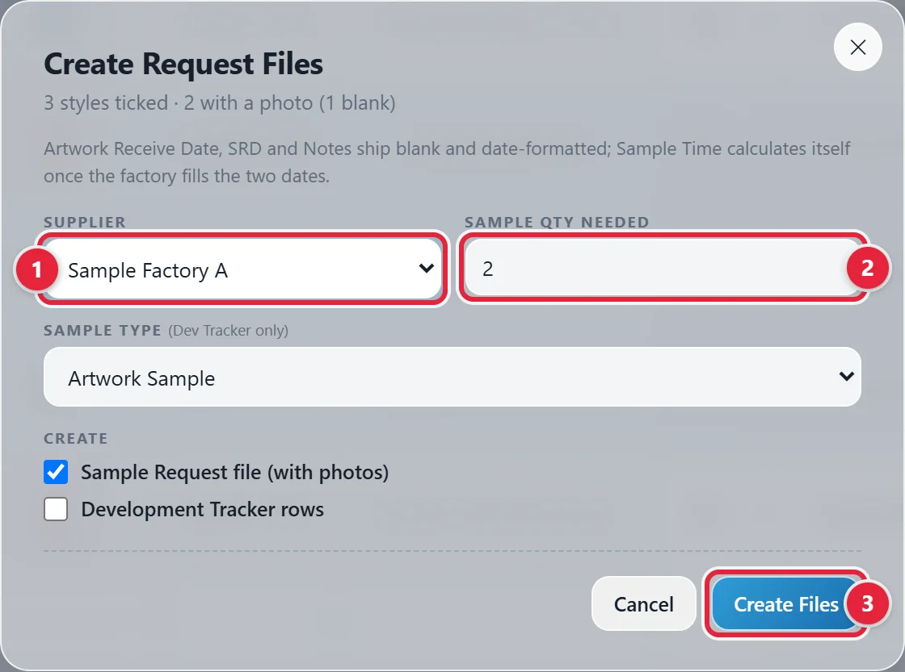
Click Dev Tracker. The same popup opens with Development Tracker rows ticked. Pick the Supplier and Sample Type. Click Create Files.
The file's columns match the Dev Tracker screen. Copy the rows, without the heading row. In the Dev Tracker, click the Status cell on a blank line and press Ctrl+V. One value that isn't on a Dev Tracker list stops the whole paste, and a box lists the cells. See Development & Sample Tracking.
Click PPS Sheet. An Excel file downloads with Style #, Picture, Description and a blank Sample Comments column. PPS is explained in the Glossary.
The tool only downloads the file. It doesn't send it. To record it in the Dev Tracker, see Add an SR, SC or BS file.
Click Export…. Tick the columns you want. Click Export 1. If you keep Image ticked, the photos go into the file.
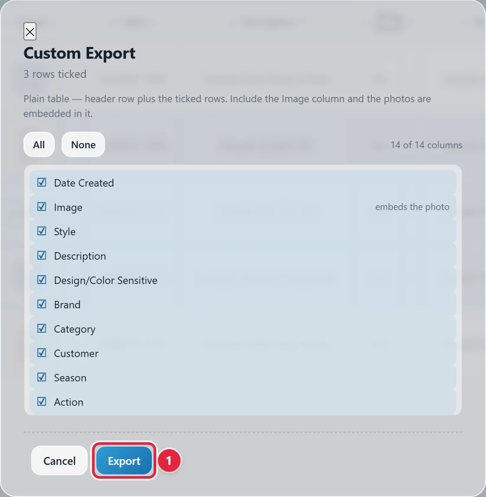
Scroll all the way right to the Scent column. Rows with a fragrance Category show + Scent 1. A row that has a scent shows its name instead. Click that name to change it.
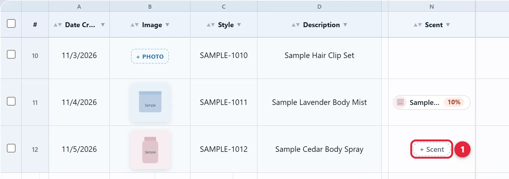
Click its tile 1. Pick more than one for a set. Click Save 2.
Not in the list? Go on to the next step to add it.
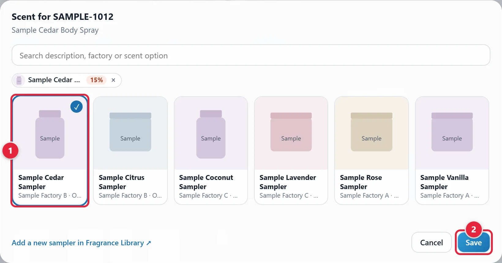
Click Add a new sampler in Fragrance Library at the bottom left of the popup. A sampler is a factory's fragrance sample. Fragrance Library opens in a new tab, on that style's scent picker. Sign in if it asks.
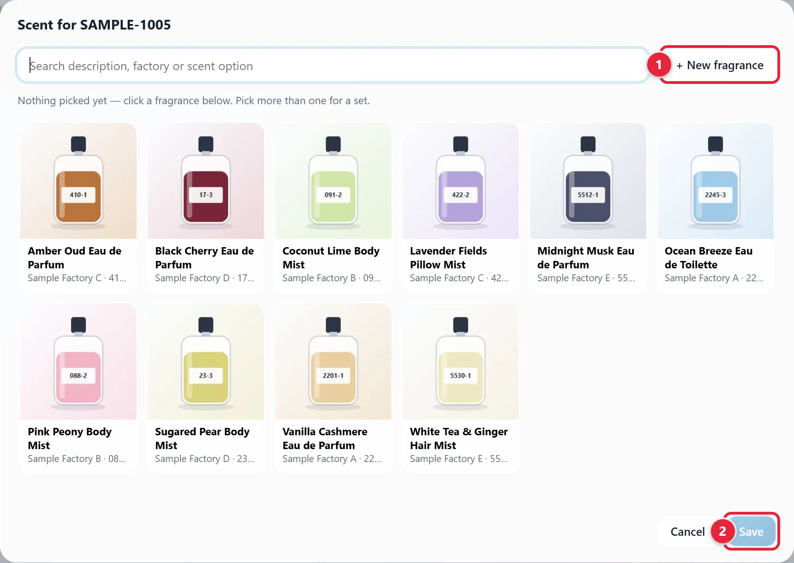
It's at the top right of the picker 1. A popup opens.
Click the box at the left, or drop or paste a picture on it. The fields then fill in from the label.
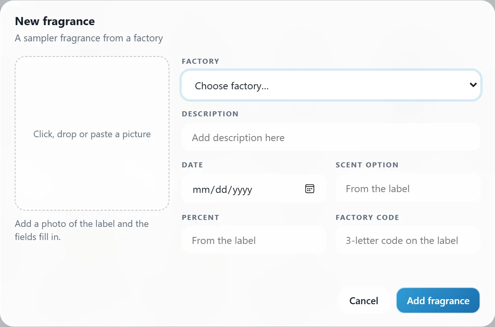
Check Factory, Description, Date, Scent Option, Percent and Factory code. Factory and Description are required.
The Factory list can be limited to the factories that make fragrance. To change it, click Cancel on this popup and on the picker. Click the Library tab at the top. Click Factories 1, as in this picture. Tick the factories that make fragrance and click Save. Go back to the Quote Tracker tab and start again from step 3.
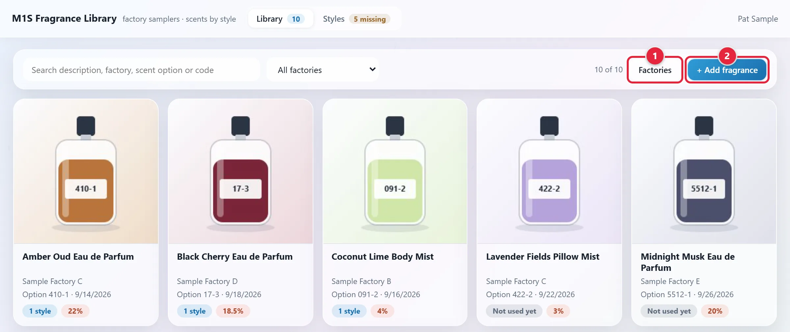
Click Add fragrance at the bottom right of the popup. The new fragrance is picked for you on the scent picker. Click Save on the picker, marked 2 in the picture in step 3.
Go back to the Quote Tracker tab. Its popup is still open, so click Cancel. Press F5 to load the page again. The row now shows the scent's name. Until you do, the Scent box can still say + Scent, or Deleted # and a number. The scent isn't lost, and the Reload button doesn't change this.
You can also add a fragrance from the Library tab with + Add fragrance, marked 2 in the picture in step 6. That adds it to the library without picking it for a style.
Use the one you need. These don't go in order.
Click ↶ Undo 3 in the top bar, or press Ctrl+Z. ↷ Redo or Ctrl+Y brings the change back.
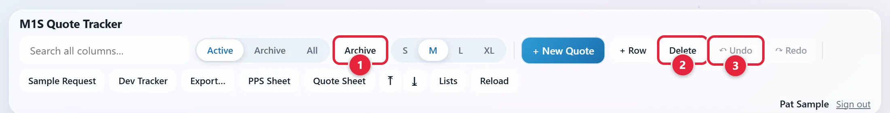
Undo doesn't cover + New Quote. It leaves that row and takes back your change before it. To remove a row made with + New Quote, use Delete a row below. For a row made with + Row, Undo empties the boxes one at a time, last first, then asks if you want to delete the row.
Click the box and start typing to replace what's there. Double-click to edit it. Press Delete to empty it.
Click + PHOTO 1 in the Image column. To replace a photo, hold Alt and click it. The row needs a Style first.
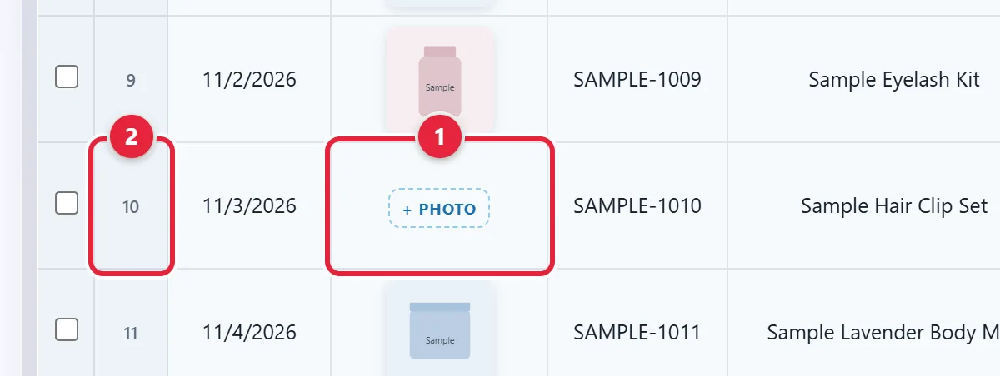
Click the row, or tick several rows. Click the Archive button beside the Active / Archive / All switch, marked 1 in the picture in step 1. To undo it, press Ctrl+Z, then click Active to see the row again.
Tick the rows, or click a row's number at the left, marked 2 in the picture in step 3. Click Delete in the top bar, marked 2 in the picture in step 1. Click OK when it asks.
Click Lists in the top bar. Pick a list at the left 1.
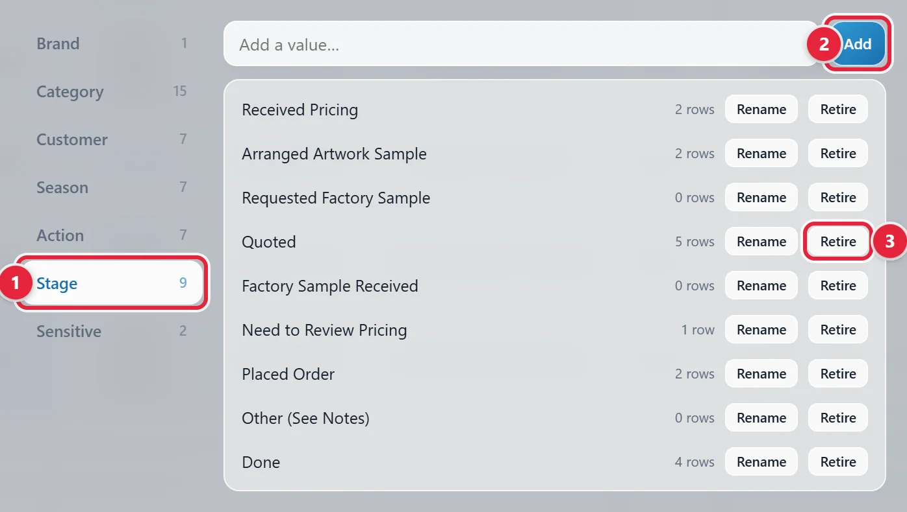
Type it in Add a value… at the top. Click Add 2.
Rename asks if you want to update the rows that use the old name. Retire 3 takes a value off the dropdown, and its button changes to Restore. Rows that use it keep it.
| Column | What goes in it |
|---|---|
| Date Created | The date the row was made. Starts as today. |
| Image | The item's photo. |
| Style | The style number. |
| Description | What the item is. |
| Design/Color Sensitive | Yes or No. |
| Brand | Picked from the Brand list. |
| Category | Picked from the Category list. |
| Customer | Picked from the Customer list. |
| Season | Picked from the Season list. |
| Action | What the item needs next. Can hold more than one value. |
| Stage | Where it is in the quoting cycle. Can hold more than one value. |
| Quote Sheet Name | The name of the quote sheet it's on, such as N26Q05. |
| Note | Anything else. Hold your mouse on it to read a long note. |
| Scent | The scent from the Fragrance Library. Set with + Scent. |
These lists are kept in the tool under Lists, so your screen may differ.
| Field | Values |
|---|---|
| Action | Need Sample · Need Quote · Need Sample/Quote · Need Factory Sample Model · Updated Artwork – Need Requote · Updated Artwork For MP · Updated Artwork For Resample |
| Stage | Received Pricing · Arranged Artwork Sample · Requested Factory Sample · Quoted · Factory Sample Received · Need to Review Pricing · Placed Order · Other (See Notes) · Done |
| Category | Bath · Body · Body Razors · Cosmetics · Electric Beauty · Fragrance · Hair · Holiday · Implements · Lashes · Makeup Brushes · Mirrors · Skincare · Storage · Wipes |
| Customer | M1S · Burlington · Ross · DDs · TJ Maxx · GT · Dollar Tree |
| Season | NA · Valentines · Christmas · Spring · Summer · Fall · Holiday |
| Design/Color Sensitive | Yes · No |
| Brand | See the Brand list under Lists. |
| Button | What it does |
|---|---|
| Active / Archive / All | Chooses which rows the list shows. |
| Archive | Archives the ticked or selected rows. It says Restore in the Archive view. |
| S M L XL | Changes the row height and photo size. |
| + New Quote | Opens the popup to add an item. |
| + Row | Moves the cursor to the blank line under the last row. |
| Delete | Deletes the ticked rows. With nothing ticked, it deletes the selected rows. It asks first. |
| ↶ Undo, ↷ Redo | Takes back a change, or puts it back. |
| Sample Request, Dev Tracker, Export…, PPS Sheet, Quote Sheet | Make Excel files from the ticked rows. |
| ⤒ ⤓ | Jump to the top or the bottom of the list. |
| Lists | Opens the dropdown lists. |
| Reload | Gets the latest rows. The list also refreshes itself every hour. |
| Button | File name | Columns |
|---|---|---|
| Quote Sheet | M1S_ | Style #, Picture, Description, Package, Qty, Price |
| PPS Sheet | M1S_ | Style #, Picture, Description, Sample Comments |
| Sample Request | SampleRequest_ | Supplier, Picture, Style#, Description, Sample Qty Needed, Artwork Receive Date, SRD, Sample Time, Notes |
| Dev Tracker | DevTracker_ | Status, Date Created, Supplier, Style #, Item Description, SR / BS #, PPS Comments #, PO#, Quote#, Sample Type, Customer. A second block under it lists each quote: Date, Factory, File Name, Products, Customer. |
| Export… | QuoteExport_ | The columns you tick. |
| Do this | To get this |
|---|---|
| Arrow keys, Tab | Move around the list. |
| Enter, Shift+Enter | Move down or up. While typing in a box, Enter saves it and moves down. |
| Start typing, double-click or F2 | Edit a box. |
| Delete or Backspace | Empty the selected boxes. |
| Click-drag, Shift+click | Select a block of boxes. |
| Click a row number | Select the row. |
| Click a column letter or heading | Select the column. |
| Ctrl+click a row number | Tick the row. |
| Ctrl+D | Fill down from the top of the selection. On one box, it copies the box above. |
| Ctrl+C, Ctrl+V | Copy and paste, also from Excel. One value pasted over a selection fills all of it. Lines pasted on the blank line each make a new row. |
| Ctrl+Z, Ctrl+Y | Undo and redo. |
| Ctrl+A | Select everything. |